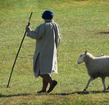

A Safe Place to Explore Questions About Life and God
A Safe Place to Explore Questions About Life and God
The following gives you a quick look at the life of Jesus Christ. These are excerpts straight from the Gospel of John, in the Bible. No comments added. They will give you an accurate and fast read of Jesus' life, death, and resurrection...and why his life is significant for you.
John 3
There was a man named Nicodemus, a Jewish religious leader who was a Pharisee. After dark one evening, he came to speak with Jesus. "Rabbi," he said, "we all know that God has sent you to teach us. Your miraculous signs are evidence that God is with you."
Jesus replied, "I tell you the truth, unless you are born again, you cannot see the Kingdom of God."
"What do you mean?" exclaimed Nicodemus. "How can an old man go back into his mother's womb and be born again?"
Jesus replied, "I assure you, no one can enter the Kingdom of God without being born of water and the Spirit. Humans can reproduce only human life, but the Holy Spirit gives birth to spiritual life. So don't be surprised when I say, 'You must be born again.' The wind blows wherever it wants. Just as you can hear the wind but can't tell where it comes from or where it is going, so you can't explain how people are born of the Spirit."
"How are these things possible?" Nicodemus asked.
Jesus replied, "You are a respected Jewish teacher, and yet you don't understand these things? No one has ever gone to heaven and returned. But the Son of Man has come down from heaven. Everyone who believes in him will have eternal life."
For God loved the world so much that he gave his one and only Son, so that everyone who believes in him will not perish but have eternal life. God sent his Son into the world not to judge the world, but to save the world through him. There is no judgment against anyone who believes in him. But anyone who does not believe in him has already been judged for not believing in God's one and only Son.
John 1
In the beginning the Word [Jesus] already existed.
The Word was with God,
and the Word was God.
He existed in the beginning with God.
God created everything through him,
and nothing was created except through him.
The Word gave life to everything that was created,
and his life brought light to everyone.
The light shines in the darkness,
and the darkness can never extinguish it.
He came into the very world he created, but the world didn't recognize him. He came to his own people, and even they rejected him. But to all who believed him and accepted him, he gave the right to become children of God. They are reborn--not with a physical birth resulting from human passion or plan, but a birth that comes from God.
So the Word became human and made his home among us. He was full of unfailing love and faithfulness. And we have seen his glory, the glory of the Father's one and only Son.
John 5
Crowds of sick people--blind, lame, or paralyzed--lay on the porches. One of the men lying there had been sick for thirty-eight years. When Jesus saw him and knew he had been ill for a long time.
Jesus told him, "Stand up, pick up your mat, and walk!"
Instantly, the man was healed! He rolled up his sleeping mat and began walking! But this miracle happened on the Sabbath, so the Jewish leaders objected. They said to the man who was cured, "You can't work on the Sabbath! The law doesn't allow you to carry that sleeping mat!"
But he replied, "The man who healed me told me, 'Pick up your mat and walk.'"
"Who said such a thing as that?" they demanded. Then the man...told the Jewish leaders that it was Jesus who had healed him.
So the Jewish leaders began harassing Jesus for breaking the Sabbath rules. But Jesus replied, "My Father is always working, and so am I."
So the Jewish leaders tried all the harder to find a way to kill him. For he not only broke the Sabbath, he called God his Father, thereby making himself equal with God.
John 6
Jesus soon saw a huge crowd of people coming to look for him. Turning to Philip, he asked, "Where can we buy bread to feed all these people?" He was testing Philip, for he already knew what he was going to do.
 Philip replied, "Even if we worked for months, we wouldn't have enough money to feed them!"
Philip replied, "Even if we worked for months, we wouldn't have enough money to feed them!"
Then Andrew, Simon Peter's brother, spoke up. "There's a young boy here with five barley loaves and two fish. But what good is that with this huge crowd?"
"Tell everyone to sit down," Jesus said. So they all sat down on the grassy slopes. (The men alone numbered about 5,000.) Then Jesus took the loaves, gave thanks to God, and distributed them to the people. Afterward he did the same with the fish. And they all ate as much as they wanted.
After everyone was full, Jesus told his disciples, "Now gather the leftovers, so that nothing is wasted." So they picked up the pieces and filled twelve baskets with scraps left by the people who had eaten from the five barley loaves.
"I tell you the truth, you want to be with me because I fed you, not because you understood the miraculous signs. But don't be so concerned about perishable things like food. Spend your energy seeking the eternal life that the Son of Man can give you. For God the Father has given me the seal of his approval."
They replied, "We want to perform God's works, too. What should we do?"
Jesus told them, "This is the only work God wants from you: Believe in the one he has sent."
"I am the bread of life. Whoever comes to me will never be hungry again. Whoever believes in me will never be thirsty. For it is my Father's will that all who see his Son and believe in him should have eternal life. I will raise them up at the last day."
John 7
On the last day, the climax of the festival, Jesus stood and shouted to the crowds, "Anyone who is thirsty may come to me! Anyone who believes in me may come and drink! For the Scriptures declare, 'Rivers of living water will flow from his heart.'" (When he said "living water," he was speaking of the Spirit, who would be given to everyone believing in him. But the Spirit had not yet been given, because Jesus had not yet entered into his glory.)
When the crowds heard him say this, some of them declared, "Surely this man is the Prophet we've been expecting." Others said, "He is the Messiah."
John 10
"I tell you the truth, anyone who sneaks over the wall of a sheepfold, rather than going through the gate, must surely be a thief and a robber! But the one who enters through the gate is the shepherd of the sheep.
Those who heard Jesus use this illustration didn't understand what he meant, so he explained it to them:
"I am the good shepherd. The good shepherd sacrifices his life for the sheep. A hired hand will run when he sees a wolf coming. He will abandon the sheep because they don't belong to him and he isn't their shepherd. And so the wolf attacks them and scatters the flock. The hired hand runs away because he's working only for the money and doesn't really care about the sheep.
"I am the good shepherd; I know my own sheep, and they know me, just as my Father knows me and I know the Father. So I sacrifice my life for the sheep.
"The Father loves me because I sacrifice my life so I may take it back again. No one can take my life from me. I sacrifice it voluntarily. For I have the authority to lay it down when I want to and also to take it up again.
But if I do his work, believe in the evidence of the miraculous works I have done, even if you don't believe me. Then you will know and understand that the Father is in me, and I am in the Father."
John 11
A man named Lazarus was sick. He lived in Bethany with his sisters, Mary and Martha. So the two sisters sent a message to Jesus telling him, "Lord, your dear friend is very sick."
But when Jesus heard about it...although Jesus loved Martha, Mary, and Lazarus, he stayed where he was for the next two days.
Finally, he said to his disciples, "Let's go back to Judea." But his disciples objected. "Rabbi," they said, "only a few days ago the people in Judea were trying to stone you. Are you going there again?"
Jesus replied..."Our friend Lazarus has fallen asleep, but now I will go and wake him up."
The disciples said, "Lord, if he is sleeping, he will soon get better!" They thought Jesus meant Lazarus was simply sleeping, but Jesus meant Lazarus had died. So he told them plainly, "Lazarus is dead...Come, let's go see him."
When Jesus arrived at Bethany, he was told that Lazarus had already been in his grave for four days. Martha said to Jesus, "Lord, if only you had been here, my brother would not have died. But even now I know that God will give you whatever you ask."
Jesus told her, "Your brother will rise again."
"Yes," Martha said, "he will rise when everyone else rises, at the last day."
Jesus told her, "I am the resurrection and the life. Anyone who believes in me will live, even after dying. Everyone who lives in me and believes in me will never ever die. Do you believe this, Martha?"
"Yes, Lord," she told him. "I have always believed you are the Messiah, the Son of God, the one who has come into the world from God."
When Mary arrived and saw Jesus, she fell at his feet and said, "Lord, if only you had been here, my brother would not have died."
When Jesus saw her weeping and saw the other people wailing with her, a deep anger welled up within him, and he was deeply troubled. "Where have you put him?" he asked them. They told him, "Lord, come and see."
Then Jesus wept. The people who were standing nearby said, "See how much he loved him!" But some said, "This man healed a blind man. Couldn't he have kept Lazarus from dying?"
Jesus was still angry as he arrived at the tomb, a cave with a stone rolled across its entrance. "Roll the stone aside," Jesus told them.
But Martha, the dead man's sister, protested, "Lord, he has been dead for four days. The smell will be terrible."
Jesus responded, "Didn't I tell you that you would see God's glory if you believe?"
So they rolled the stone aside. Then Jesus looked up to heaven and said, "Father, thank you for hearing me. You always hear me, but I said it out loud for the sake of all these people standing here, so that they will believe you sent me."
Then Jesus shouted, "Lazarus, come out!" And the dead man came out, his hands and feet bound in graveclothes, his face wrapped in a headcloth. Jesus told them, "Unwrap him and let him go!" Many of the people who were with Mary believed in Jesus when they saw this happen.
But some went to the Pharisees and told them what Jesus had done. Then the leading priests and Pharisees called the high council together. "What are we going to do?" they asked each other. "This man certainly performs many miraculous signs. If we allow him to go on like this, soon everyone will believe in him." So from that time on, the Jewish leaders began to plot Jesus' death.
John 12
Many people did believe in him, however, including some of the Jewish leaders. But they wouldn't admit it for fear that the Pharisees would expel them from the synagogue. For they loved human praise more than the praise of God.
John 13
Before the Passover celebration, Jesus knew that his hour had come to leave this world and return to his Father. It was time for supper, and the devil had already prompted Judas, son of Simon Iscariot, to betray Jesus.
Now Jesus was deeply troubled, and he exclaimed, "I tell you the truth, one of you will betray me!" Judas left at once, going out into the night.
John 14
[Jesus speaking] "Don't let your hearts be troubled. Trust in God, and trust also in me. There is more than enough room in my Father's home. If this were not so, would I have told you that I am going to prepare a place for you? When everything is ready, I will come and get you, so that you will always be with me where I am.
Soon the world will no longer see me, but you will see me. Since I live, you also will live. When I am raised to life again, you will know that I am in my Father, and you are in me, and I am in you. Those who accept my commandments and obey them are the ones who love me. And because they love me, my Father will love them. And I will love them and reveal myself to each of them."
John 15
[Jesus speaking] "I have loved you even as the Father has loved me. Remain in my love. When you obey my commandments, you remain in my love, just as I obey my Father's commandments and remain in his love. I have told you these things so that you will be filled with my joy. Yes, your joy will overflow!"
"This is my commandment: Love each other in the same way I have loved you. There is no greater love than to lay down one's life for one's friends."
"If the world hates you, remember that it hated me first. If I hadn't done such miraculous signs among them that no one else could do, they would not be guilty. But as it is, they have seen everything I did, yet they still hate me and my Father. This fulfills what is written in their Scriptures: 'They hated me without cause.'"
John 16
[Jesus speaking] I tell you the truth, you will weep and mourn over what is going to happen to me, but the world will rejoice. You will grieve, but your grief will suddenly turn to wonderful joy. So you have sorrow now, but I will see you again; then you will rejoice, and no one can rob you of that joy.... the Father himself loves you dearly because you love me and believe that I came from God. Yes, I came from the Father into the world, and now I will leave the world and return to the Father."
John 17
After saying all these things, Jesus looked up to heaven and said:
"Father, the hour has come. Glorify your Son so he can give glory back to you. For you have given him authority over everyone. He gives eternal life to each one you have given him. And this is the way to have eternal life--to know you, the only true God, and Jesus Christ, the one you sent to earth.
I brought glory to you here on earth by completing the work you gave me to do. Now, Father, bring me into the glory we shared before the world began.
I told them many things while I was with them in this world so they would be filled with my joy. I have given them your word. And the world hates them because they do not belong to the world, just as I do not belong to the world.
I am praying not only for these disciples but also for all who will ever believe in me through their message.
O righteous Father, the world doesn't know you, but I do; and these disciples know you sent me. I have revealed you to them, and I will continue to do so. Then your love for me will be in them, and I will be in them."
John 18
After saying these things, Jesus crossed the Kidron Valley with his disciples and entered a grove of olive trees. Judas, the betrayer, knew this place, because Jesus had often gone there with his disciples. The leading priests and Pharisees had given Judas a contingent of Roman soldiers and Temple guards to accompany him. Now with blazing torches, lanterns, and weapons, they arrived at the olive grove.
Jesus fully realized all that was going to happen to him, so he stepped forward to meet them. "Who are you looking for?" he asked.
"Jesus the Nazarene," they replied.
"I Am he," Jesus said. (Judas, who betrayed him, was standing with them.) The soldiers, their commanding officer, and the Temple guards arrested Jesus and tied him up.
Pilate, the governor, asked, "What is your charge against this man?"
"We wouldn't have handed him over to you if he weren't a criminal!" they retorted.
"Then take him away and judge him by your own [Jewish] law," Pilate told them.
"Only the Romans are permitted to execute someone," the Jewish leaders replied. 32 (This fulfilled Jesus' prediction about the way he would die.)
John 19
Pilate had Jesus flogged with a lead-tipped whip. The soldiers wove a crown of thorns and put it on his head, and they put a purple robe on him. "Hail! King of the Jews!" they mocked, as they slapped him across the face.
Pilate went outside again and said to the people, "I am going to bring him out to you now, but understand clearly that I find him not guilty."
Then Jesus came out wearing the crown of thorns and the purple robe. And Pilate said, "Look, here is the man!" When they saw him, the leading priests and Temple guards began shouting, "Crucify him! Crucify him!"
"Take him yourselves and crucify him," Pilate said. "I find him not guilty."
The Jewish leaders replied, "By our law he ought to die because he called himself the Son of God."
When Pilate heard this, he was more frightened than ever. He took Jesus back into the headquarters again and asked him, "Where are you from?"
But Jesus gave no answer.
"Why don't you talk to me?" Pilate demanded. "Don't you realize that I have the power to release you or crucify you?"
Then Jesus said, "You would have no power over me at all unless it were given to you from above. So the one who handed me over to you has the greater sin."
Then Pilate tried to release him, but the Jewish leaders shouted... "Away with him," they yelled. "Away with him! Crucify him!" Then Pilate turned Jesus over to them to be crucified.
So they took Jesus away. Carrying the cross by himself, he went to the place called Place of the Skull (in Hebrew, Golgotha). There they nailed him to the cross.
Jesus knew that his mission was now finished, and to fulfill Scripture he said, "I am thirsty." A jar of sour wine was sitting there, so they soaked a sponge in it, put it on a hyssop branch, and held it up to his lips. When Jesus had tasted it, he said, "It is finished!" Then he bowed his head and released his spirit.
It was the day of preparation, and the Jewish leaders didn't want the bodies hanging there the next day, which was the Sabbath (and a very special Sabbath, because it was the Passover). So they asked Pilate to hasten their deaths by ordering that their legs be broken. Then their bodies could be taken down.
So the soldiers came and broke the legs of the two men crucified with Jesus. But when they came to Jesus, they saw that he was already dead, so they didn't break his legs. One of the soldiers, however, pierced his side with a spear, and immediately blood and water flowed out.
When Pilate gave permission, Joseph came and took the body away. With him came Nicodemus, the man who had come to Jesus at night. He brought seventy-five pounds of perfumed ointment made from myrrh and aloes. Following Jewish burial custom, they wrapped Jesus' body with the spices in long sheets of linen cloth. The place of crucifixion was near a garden, where there was a new tomb, never used before. And so, because it was the day of preparation for the Jewish Passover and since the tomb was close at hand, they laid Jesus there.
John 20
Early on Sunday morning, while it was still dark, Mary Magdalene came to the tomb and found that the stone had been rolled away from the entrance. She ran and found Simon Peter and the other disciple, the one whom Jesus loved. She said, "They have taken the Lord's body out of the tomb, and we don't know where they have put him!"
Peter and the other disciple started out for the tomb. They were both running, but the other disciple outran Peter and reached the tomb first. He stooped and looked in and saw the linen wrappings lying there, but he didn't go in.
Then Simon Peter arrived and went inside. He also noticed the linen wrappings lying there, while the cloth that had covered Jesus' head was folded up and lying apart from the other wrappings. Then the disciple who had reached the tomb first also went in, and he saw and believed--for until then they still hadn't understood the Scriptures that said Jesus must rise from the dead. Then they went home.
Mary was standing outside the tomb crying, and as she wept, she stooped and looked in. She saw two white-robed angels, one sitting at the head and the other at the foot of the place where the body of Jesus had been lying.
"Dear woman, why are you crying?" the angels asked her.
"Because they have taken away my Lord," she replied, "and I don't know where they have put him."
She turned to leave and saw someone standing there. It was Jesus, but she didn't recognize him.
"Dear woman, why are you crying?" Jesus asked her. "Who are you looking for?"
She thought he was the gardener. "Sir," she said, "if you have taken him away, tell me where you have put him, and I will go and get him."
"Mary!" Jesus said.
She turned to him and cried out, "Rabboni!" (which is Hebrew for "Teacher").
"Don't cling to me," Jesus said, "for I haven't yet ascended to the Father. But go find my brothers and tell them, 'I am ascending to my Father and your Father, to my God and your God.'"
Mary Magdalene found the disciples and told them, "I have seen the Lord!"
That Sunday evening the disciples were meeting behind locked doors because they were afraid of the Jewish leaders. Suddenly, Jesus was standing there among them! "Peace be with you," he said.
As he spoke, he showed them the wounds in his hands and his side. They were filled with joy when they saw the Lord! Again he said, "Peace be with you. As the Father has sent me, so I am sending you." Then he breathed on them and said, "Receive the Holy Spirit."
One of the twelve disciples, Thomas...was not with the others when Jesus came. They told him, "We have seen the Lord!"
But he replied, "I won't believe it unless I see the nail wounds in his hands, put my fingers into them, and place my hand into the wound in his side."
Eight days later the disciples were together again, and this time Thomas was with them. The doors were locked; but suddenly, as before, Jesus was standing among them. "Peace be with you," he said.
Then he said to Thomas, "Put your finger here, and look at my hands. Put your hand into the wound in my side. Don't be faithless any longer. Believe!"
"My Lord and my God!" Thomas exclaimed.
Then Jesus told him, "You believe because you have seen me. Blessed are those who believe without seeing me."
See what Jesus is offering you. Please see "Beyond Blind Faith."
Unless otherwise indicated, all Scripture quotations are taken from the Holy Bible, New Living Translation, copyright © 1996, 2004, 2007 by Tyndale House Foundation. Used by permission of Tyndale House Publishers, Inc., Carol Stream, Illinois 60188. All rights reserved.
| ► | I have a question or comment... |
| ► | How to know God... |